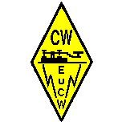
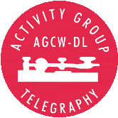
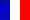
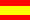
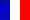
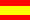

|  |
THE EUROPEAN CW ASSOCIATIONEuCW QRS ACTIVITY WEEK |
 |
Translations of the rules

 





The EuCW cordially invites all radio amateurs and SWLs to take part in the annual EuCW QRS Activity Week. This is not a contest, on the contrary, it is an invitation to slow down CW speeds and to enjoy plenty of slow Morse activity for a period of five days. The dates selected are intended to avoid weekend contest activity. The goal is not self-exposure and competitiveness but to lower the threshold for newcomers to give CW a try. The right spirit is to take part in this as a service to potential newcomers. This won't get YOU closer to any Hall of Fame, this will help others while your patience might be stretched a little.
Work any station, including members of EuCW clubs, but send only in QRS. Standard QSOs with non-participating stations can be included in logs.
The EuCW Week has a history dating back to 2001 when it was introduced by FISTS. The EuCW thanks FISTS for having this excellent idea and for doing all the work for an entire decade. Since 2012 the EuCW QRS work is organized by AGCW. Recognitions for the most active participants are issued,
Those who wish to indicate distinguished participants may include up to three votes for the special recognition "Most Readable Morse Heard" (one vote per station). If you wish not to execute this right please state this in your log, too.
From Monday 0000z to Friday 2359z in the week after the 4th Sunday in April.
Examples:
2025: April 28, 00:00 UTC thru May 2, 23:59 UTC
2026: April 27, 00:00 UTC thru May 1, 23:59 UTC
2027: April 26, 00:00 UTC thru April 30, 23:59 UTC
2028: April 24, 00:00 UTC thru April 28, 23:59 UTC
There is also an invisible class of participating EuCW clubs. You may dedicate your participation to a EuCW club of your preference. Add your club name and number to the log please. You may publicize your club membership in your QSOs but there is no obligation to do this. I would not recommend to confuse newcomers with club acronyms and cryptic 5 digit numbers.
No targeted call required but "CQ QRS" may be useful to be detected as participant committed to this activity. Experienced operaters should call CQ as much as possible because newcomers tend to be shy and they prefer to select stations they can easily read.
Recommended (no obligation) areas of activity: +/- 10 kHz of the center frequencies below, including WARC bands (see below).
As always, non-QRP stations should avoid calling CQ on the popular QRP frequencies (see below). Do not use frequencies outside the 'CW ONLY' bands as defined by the current band plan. Since this activity is not a contest there is no need to stay within the 'contest preferred bands'.
Use any type of key or keyer. No keyboard sending or pre-programmed messages from computers or keyers, but pre-programmed CQ calls or CQ loops are permitted. Maximum speed 14 words per minute (70cpm). If a responding operator uses slower CW the caller should adapt his speed accordingly. Users of CQ loops should not discourage their callers by switching to very personal (hard to read) swing after the CQ call.
Minimal duration of a QSO is FIVE minutes. Normal friendly QSOs, no special requirements. QSOs with any station may be logged. Work any station in any country, including stations not taking part in the QRS Party but try to persuade them to work QRS.
Give realistic RST values, refrain from a stereotype 599.
We follow the principle that all stations are equal no matter how shiny their prefix or suffix may be. The goal is to obtain the amount of QRS signals as high as possible, so please work your QSO partners every day.
All logs consist of two parts: a HEADER (traditionally called summary sheet) and a QSO LIST.
Minimum header data:
1) Own call sign
2) Name and qth (as used in QRS Week)
3) Return address
4) EuCW club of preference (only one, and you have to be a mbr)
5) Class (a=qro or b=qrp or c=swl)
6) Number of valid QSOs
7) Your votes for most distinguished operator: "Most Readable Morse"
8) Your preference for recognitions: PDF or paper.
You are encouraged to add as much detail as you wish. You may wish to document details of your transmission such as alternative QTHs (a station in Chelmsford may have the habit to identify the town only in UK contacts, while the op might use "ESSEX" as qth with EU and "NR LONDON" with DX). Some may vary their handle, e.g. a DL may use Karl-Heinz locally, Karl inside DL, and Chas for DX. If you choose to be inconsistent when you identify your club you may wish to mention this, too. The added-value would be that additional detail is useful for (potential) SWL logs. Last but not least you should tell me whether you prefer an electronic recognition (PDF) or one one paper just in case you turn out to be one of the most active stations
Minimum QSO list columns
1) Date (as YYYYMMDD)
2) Time as UTC (as HHMM)
3) Call (other stn)
4) Band
5) Mode (=CW)
6) RST given to other stn
7) RST received fm other stn
8) Name received fm other stn
9) QTH of other stn given on air
Try to avoid logging software which fills name and qth fields out of
call book or Internet lookups. Instead, log what you hear on the air.
For RST given, RST received, Name, and QTH, the columns must be included but incorrect or missing values in them are acceptable. You are encouraged to add as much detail as you wish, e.g. tx, ant, wx of the other stn
LOG SUBMISSION depends on your logging style. One of three cases apply.
I) You log is in ADIF format.
Click here for example log I
II) Your log is a simple list in ASCII text (csv)
Click here for example log II
III) Your log is on paper (email a picture/scan)
Click here for example log III
I) Users of logging software export their log as ADIF files (extension .adi) and verify the presence of the minimum data. Please do not forget to add the header data and put them in the text of your email. NOTE: Check the ADIF file visually for the presence of all elements, some ADIF creators may omit relevant fields. BEST PRACTICE: Download the FISTS Log Converter and use it to post-process your log (See chapter RECOMMENDED SOFTWARE).
II) If you transfer a log manually the best choice is to pass the data to a logging software and export as ADIF as above. If you wish to create your files manually from scratch with an editor or spread sheet software please create .txt or .csv files in plain ASCII code that do not require a particular software. If asked for a delimiter choose semicolon. Don't forget the header data.
III) Manual Logs are quite ok, the least painful procedure is to go to a copy shop and to draw photocopies from the original log. Another idea is to ask a relative or friend to take a picture of the log, verify the readability and email it.
The predominant idea is that any log is better than no log at all just as a partial qso is better than no qso. The EuCW QRS is primarily not a competition but an opportunity for CW newcomers and CW skeptics to enjoy Morse code without fear from excessive speeds. If you have a choice, please send a Log in format II. Some users find it hard not to use their spread sheet programs. If you belong to these, please fill all entries in all records and please use the yyyymmdd format.
http://fists.co.uk/members/membersflc.html The free FISTS Log Converter for Windows should be used to create log submissions for EuCW QRS Week. It can either read QSOs from an ADIF file exported from most logbook programs, or if you don't currently use a logbook program, its own logbook feature can be used to create an electronic log from scratch. Users of other operating systems may prefer logging style I. If you are using a modern logging software please switch off the autofill option adding name or qth by using a local or remote database. You must enter the on-air names and the qth used on air, otherwise a penalty is possible.
Log must arrive not later than 31st May
Recommended area of activity +/- 10 kHz from the activity centers as follows:
2m 144.065 MHz (avoid 144050 because of the E_s season)
6m Use any frequency compatible with the IARU band plan
10m 28.055 MHz (Recommended IARU frequency for QRS)
12m 24.905 MHz
15m 21.055 MHz (Recommended IARU frequency for QRS)
17m 18.085 MHz
20m 14.055 MHz (Recommended IARU frequency for QRS)
30m 10.125 MHz
40m 7.035 MHz (stay in the exclusive CW band 7000-7040 kHz)
80m 3.555 MHz (Recommended IARU frequency for QRS)
160m Use any frequency compatible with the IARU band plan
QRP CW Calling Frequencies to be avoided by non-QRP (cq calling) stations. 1843; 3560; 7030; 10116; 14060; 18096; 21060; 24906; 28060 kHz.
Under good North America condx 14056.5, 18091.5, 21056.5, 10122.5 are often used as frequencies of the Mobile Emergency and County Hunters Net where dozens of stations participate.
These recommendations are given as a help to find other QRS partners they are not binding. However, decent operators know and respect the IARU band plan which is established by the international community of hams. Download a copy of the band plan at iaru.org before switching on a TX. Try to avoid the lower end of the CW bands.
New friends of CW who do not yet feel ready to put their CW on air are invited to read the SWL rules.
RESULT LISTS
2001 2002 2003 2004 2005 2006 2007 2008 2009 2010 2011 2012 2013 2014 2015 2016 2017 2018 2019 2020 2021 2022 2023 2024 2025
The QRS Week is sponsored and organized by AGCW-DL.